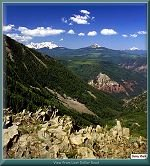
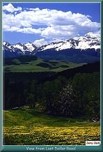

Contributed by Jerry Clark
| The Last Dollar Road was an early supply route from Ouray to Telluride. It is not a difficult trail, and the road can be driven by high clearance 2 wheel drive vehicles in dry weather. Four wheel drive is required in any wet conditions. The Last Dollar road offers beautiful vistas, high alpine meadows and views of the San Miguel canyon. |
|
 |
View from the Last Dollar Road
(134k) |

| The Last Dollar Road begins 1 mile west of the summit of Dallas Divide on Colorado Highway 62. Driving from Ridgway, the road is a left turn off CO 62. The road travels over Hastings Mesa. Approximately 6 ½ miles from Dallas Divide the road forks. The right turn leads down to Colorado 145 at Sawpit. The left turn continues along the top of the mesa and eventually joins CO 145 just past the airport outside Telluride. |
|
 |
View from the Last Dollar Road
(103k) |

| A number of large homes have recently been built near the end of the road for the entertainment crowd which is overrunning (and overpricing) the area. Don't be intimidated by the megabuck 4 wheel drive vehicles you see parked outside these mountain mansions. You can be sure they've never been down the Black Bear or Imogene. |

|
The Narrow Gauge Circle is written, maintained,and hosted by: Mark L. Evans Send Comments to:Mark L. Evans All original materials, text, and digital images Copyright © 1996-2017 Mark L. Evans. All rights reserved. Imitation is said to be the "sincerest" form of flattery.....Please don't flatter us without permission. |